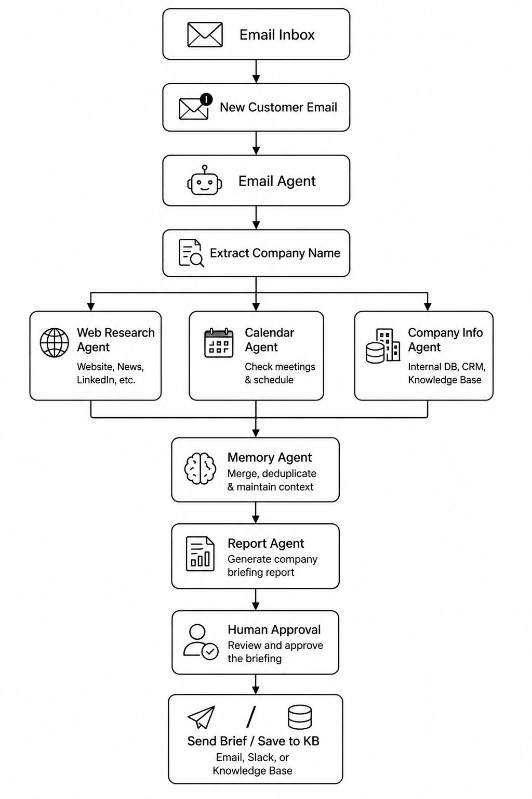

Seminar · AI Engineering
Workflow Is All You Need
Agents, RAG, tool calling, context engineering: the same primitives, one engine. Every page has runnable code: read it, change it, press Run.
Every six months, a new “engineering”
Prompt Engineering→
RAG→
Function Calling→
Agents→
Context Engineering→
Harness Engineering→
Loop Engineering→
Graph Engineering→
…
How many agents does it really take?

No framework today. We build every agent idea from scratch, in a few lines each, and look at what's underneath. Then we count the agents, measure two real builds, break one on Monday morning, and run the whole system live.
The route
Part I · The agent, as it isBuild the agent from scratchOne file,
agent.py, seven layers: the call, knowledge, tools and MCP, the loop, context, the harness, many agents. The code and its function graph grow together.
Part II · Workflow enginesAn agent is a workflow with a loopWhere one agent hits a wall, why it is just a graph, and what runs graphs: inside LangGraph and OperonX.
Part III · ProductionProduction: the engine at workWhat breaks on a Monday morning, which engine part fixes it, and the real system live on OperonX.
EpilogueThe decoderThe answer to the 8 am question, and every buzzword as what it really is.
How to use this site
| Run code | Pipelines: ▶ Run or Step lights each step and shows what it produced; the Code tab holds the whole program, editable. ＋ The same in LangChain is there for comparison, outside the talk. |
| Start it | ./stack.sh up, then 127.0.0.1:8000. It starts the meeting-prep world (mail, database, mocks), this runner, the OperonX app and Studio. Just the site: uv run python -m runner.server. |
| Mock or real model | Real (default): the in-house model for plain calls, gpt-4o-mini for tool calls; the keys stay on the runner. Mock: offline, instant, free (used automatically when the runner has no key). |
| Move around | The sidebar, the Previous / Next cards, or Alt + ←/→; inside a part, the numbered tabs or ← →. The Decoder button (bottom right) collects what each word really is, one line per chapter. |